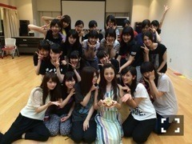
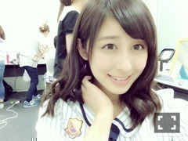

| 2014/07 27 Sun | 最高です。アンダー ライブ。(´>∀<｀)ゝ |
ちはるーむへようこそ(｡-_-｡)

アンダーメンバー！&斎藤ちはる！

アンダーライブ、千秋楽、終了しました！
なんていうか、本当に本当に最高でした。ヽ(；；)丿
これ以上の言葉が見つからない。。
ありがとう。。
振り返ると、
たくさんメンバー同士で意見がぶつかることもあったり
一期生から二期生に喝をいれたり
早くから自主練習したり
遅くまで残って確認しあったり
本番前はかならず30分前までに準備を終わらせて声だしから、ウォーミングアップから、ライブの一連の確認とかしあったり
オーバーチャーのときに背中叩き合って気合入れて、楽しむぞ！って笑顔で言い合ったり
こうして思い出を挙げていくとキリがないくらい、
たくさんのことがありました。
辛いこともあったけど、
みんなで支え合いながら、
励まし合いながら、
このメンバーで千秋楽まで最高のステージをつくるぞ！
っていう強い意志があったからこそ
こうして乗り越えてきたんだと思います。
そんなこと考えながら迎えた千秋楽。
実は円陣してるときから涙出そうでした。(´･_･`)
こうして頑張ってきたこのメンバーでやるライブも、今日が最後かと思うとなんか涙がね。。
川後には堪えてるのばれてたけど。。笑
そして一発目の「狼に口笛を」を歌ってるときにもなぜか涙が溢れてきて。。
曲中だとみんなに迷惑かかるから我慢しました。。笑
涙もろくなったな(´･_･`)元々だけど更に
そして本編最後のMCでたくさんのメンバーが泣いてるのを見てもらい泣きしてしまい。
最後、アンコールの乃木うたでは
歌詞に感情輸入しちゃって色々思い出に振り返ったりしてたら
最後のMCではもう号泣してしまいました。
ダブルアンコールでのお辞儀や、
ロマンスのスタート、顔ぐちゃぐちゃだったのは秘密ね(´･_･`)。笑笑
こんなに、悔し涙じゃなくて
んー。嬉し涙とはまた違うけど
感動というか、そういう涙を流したライブっていうのは初めてだったし
もしこのメンバーでライブをしていなかったら絶対経験してなかった涙でした。
本当にそう思えるくらい最高で、大好きなメンバーたち。
アンダーメンバーだけでなく、二期生との絆も深まっていくのを実感したよ。
一緒にユニットをやった
琴子、米徳ちゃん、れなち。
一緒に同じものを創り上げられて本当によかったよ。
苦戦もしたし、大変だったけど、
いい思い出になったよね。
ありがとう。
そして支えてくださったり、
厳しく、しっかり指導してくださった、
スタッフさん、演出家さん。
ライブに参加してくださった
ファンの皆さん。
ライブに来れず遠くから応援してくだった
ファンの皆さん。
そして一緒に乗り越えてきた
9thのアンダーメンバー、斎藤ちはる。
こうして無事にライブを終了できたのは
たくさんの方のおかげです。
本当にありがとうございます。

タオルとか、うちわとか、サイリウムとか、気付いたよ♡
本当にありがとう(｡-_-｡)
指差して手振ったんだけど気付いたかな？(｡-_-｡)
だいすき！！
最高！！
ばいるんっ
るんるんっ
ちはるんっ
(´>∀<｀)ゝ
コメント(242)
2014/07/27 00:00